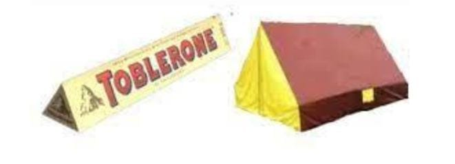
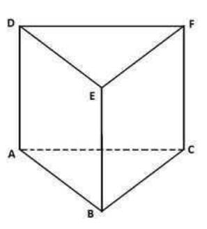
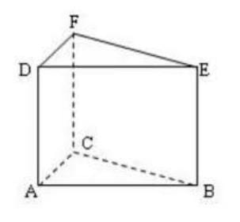
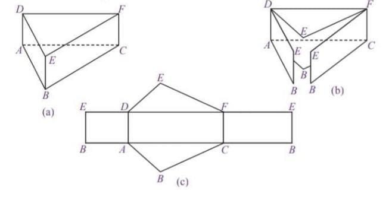
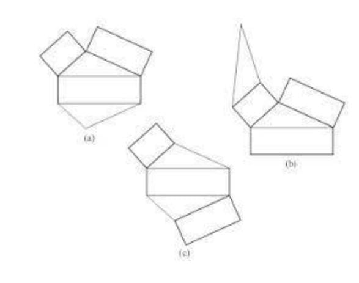
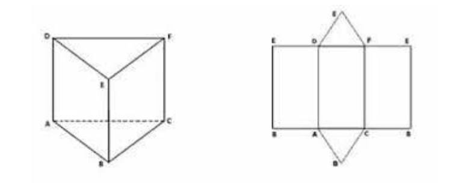
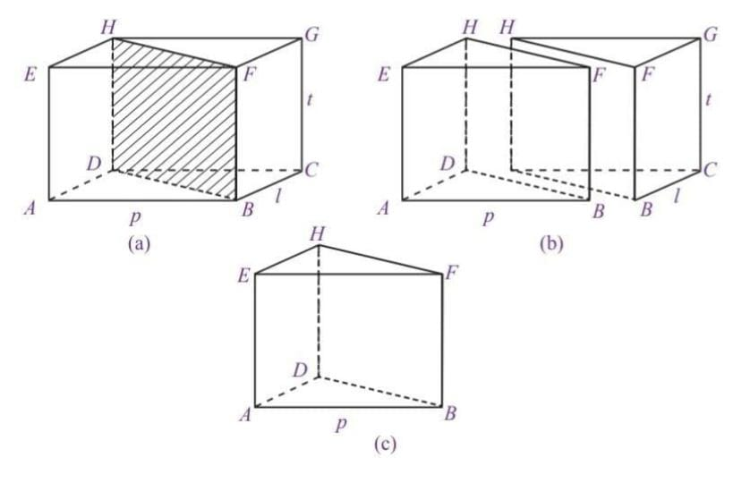
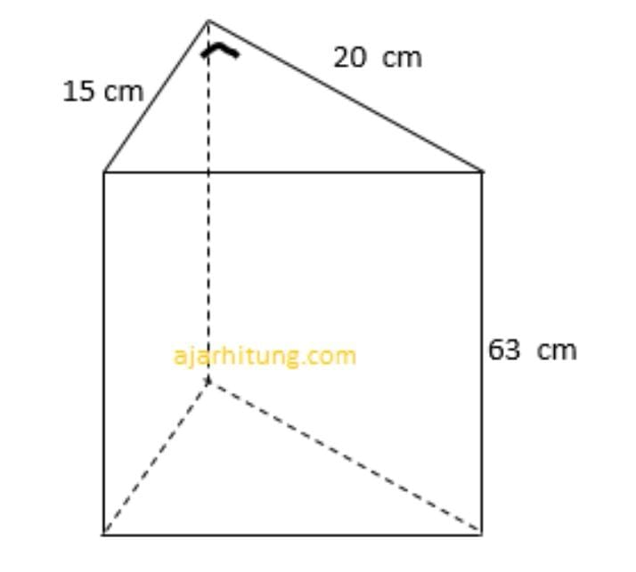

Bangun ruang sisi datar merupakan suatu bangun tiga dimensi yang memiliki ruang/ volume/ isi dan juga sisi-sisi yang membatasinya. Secara garis besar, bangun ruang bisa kita kategorikan menjadi dua kelompok, antara lain: bangun ruang sisi datar dan bangun ruang sisi lengkung. Yang termasuk dalam bangun ruang sisi datar yaitu kubus, balok, prisma, dan limas. Sementara untuk bangun ruang sisi lengkung terdiri atas kerucut, tabung, dan bola. Bangun ruang sisi datar merupakan suatu bangun ruang di mana pada masing-masing sisinya tersusun dari bangun datar. Apabila dalam suatu bangun ruang mempunyai satu saja sisi yang lengkung maka bangun tersebut tidak bisa dikatakan sebagai bangun ruang sisi datar.
Coba kamu perhatikan benda-benda berikut ini.
Berbeda dengan kubus dan balok, bangun ruang ini memiliki kekhasantersendiri.
Coba perhatikan bangun ruang tersebut memiliki bentuk alas dan atap yang sama bentuk dan aturannya. Selain itu, semua sisi bagian samping berbentuk persegipanjang bangun ruang ini dinamakan prisma.
2. Sifat-sifat prismaPerhatikan prisma ABC.DEF pada gambar di samping. Secara umum, sifat-sifat prisma adalah sebagai berikut.
a. Prisma memiliki bentuk alas dan atap yang kongruen. Pada gambar terlihat bahwa segitiga ABC dan DEF memiliki ukuran dan bentuk yang sama.
b. Setiap sisi bagian samping prisma berbentuk persegipanjang. Prisma segitiga pada gambar dibatasi oleh tiga persegipanjang di setiap sisi sampingnya, yaitu ABED, BCFE, dan ACFD.
c. Prisma memiliki rusuk tegak. Perhatikan prisma segitiga pada gambar. Prisma tersebut memiliki tiga buah rusuk tegak, yaitu AD, BE, dan CF. Rusuk tersebut dikatakan tegak karena letaknya tegak lurus terhadap bidang alas dan atas. Dalam kondisi lain, ada juga prisma yang rusuknya tidak tegak, prisma tersebut disebut prisma sisi miring.
d. Setiap diagonal bidang pada sisi yang sama memiliki ukuran yang sama.
Prisma segitiga ABC.DEF pada gambar diagonal bidang pada sisi ABED memiliki ukuran yang sama panjang. Perhatikan bahwa AE = BD, BF = CE, dan AF = CD
3. Menggambar PrismaSama seperti menggambar kubus dan balok, menggambar prisma pun akan lebih baik dilakukan pada kertas berpetak. Misalkan, prisma yang digambar adalah prisma segitiga.
Berikut ini adalah langkah-langkah yang harus dilakukan dalam menggambar prisma segitiga.
a. Langkah pertama, gambarlah sebuah segitiga, baik segitiga siku-siku, sama sisi, sama kaki, maupun segitiga sebarang. Segitiga tersebut berperan sebagai sisi atas dari sebuah prisma. Pada Gambar 17, segitiga yang dibuat adalah segitiga ABC (segitiga sebarang).
b. Kemudian, dari setiap ujung segitiga ABC, yaitu titik A, B, dan C, dibuat garis lurus dengan arah vertikal. Pada Gambar 17 , terlihat ada tiga ruas garis yang ditarik dari ujung-ujung segitiga ABC. Tiga ruas garis itu adalah ruas garis AD, BE, dan CF yang semuanya memiliki ukuran sama panjang. Tiga ruas tersebut merupakan rusuk tegak dari prisma yang akan dibuat.
c. Langkah selanjutnya, hubungkan ujung ruas garis yang telah dibuat. Hasilnya adalah sebuah sisi/bidang DEF yang merupakan sisi alas dari prisma segitiga. Perlu diingat garis DF digambar putus-putus karena garis tersebut terletak di belakang prisma.
4. Jaring-jaring PrismaJaring-jaring prisma diperoleh dengan cara mengiris beberapa rusuk prisma
tersebut sedemikian sehingga seluruh permukaan prisma terlihat. Misalkan, prisma yang akan dibuat jaring-jaringnya adalah prisma segitiga. Berikut ini adalah alur pembuatan jaring-jaring prisma segitiga. Coba kamu perhatikan Gambar 18 dengan saksama.
Dari Gambar 19, terlihat bahwa jaring-jaring prisma memiliki tiga persegipanjang sebagai sisi tegak dan dua segitiga sebagai sisi alas dan sisi atas. Berikut ini adalah berapa jaring-jaring prisma segitiga yang lain.
Terdapat beberapa macam bentuk jaring-jaring prisma segitiga yang dapat dibuat. Semuanya bergantung pada cara mengiris beberapa rusuk prisma segitiga tersebut. Coba kamu tentukan bentuk jaring-jaring prisma segitiga yang lain.
5. Luas Permukaan PrismaSama seperti kubus dan balok, luas permukaan prisma dapat dihitung menggunakan jaring-jaring prisma tersebut. Caranya adalah dengan men- jumlahkan semua luas bangun datar pada jaring-jaring prisma. Coba kamu perhatikan prisma segitiga beserta jaring-jaringnya pada Gambar 8.30 berikut ini.
Dari Gambar 8.25 terlihat bahwa prisma segitiga ABC.DEF memiliki sepasang segitiga yang identik dan tiga buah persegipanjang sebagai sisi tegak.
Dengan demikian, luas permukaan prisma segitiga tersebut adalah
luas permukaan prisma = luas ΔABC + luas ΔDEF + luas EDAB + luas DFCA + luas FEBC
= 2 · luas ΔABC + luas EDBA + luas DFAC + luas FEBC
= (2 · luas alas) + (luas bidang-bidang tegak)
Jadi, luas permukaan dapat dinyatakan dengan rumus sebagai berikut. Luas permukaan prisma = 2 · luas alas + luas bidang-bidang tegak
6. Volume PrismaUntuk mengetahui rumus volume prisma, perhatikan Gambar 21 berikut.
Gambar 21 memperlihatkan sebuah balok ABCD.EFGH yang dibagi dua secara melintang. Ternyata, hasil belahan balok tersebut membentuk prisma segitiga, seperti pada Gambar 21 (b).
Perhatikan prisma segitiga BCD.FGH pada Gambar 21 (c) . Dengan demikian, volume prisma segitiga adalah setengah kali volume balok.
Volume prisma BCD.FGH
=1/2× volume balok ABCD.EFGH
=1/2 × (p × l × t)
= ( 1/2× p × l) × t
= luas alas × tinggi
Jadi, volume prisma dapat dinyatakan dengan rumus sebagai berikut.
Volume prisma = luas alas × tinggi
Ringkasan :1. Prisma adalah bangun ruang yang memiliki bentuk alas dan atap yang sama bentuk dan aturannya. Selain itu, semua sisi bagian samping berbentuk persegipanjang.
2. . Terdapat 8 sisi atau bidang yang dimiliki oleh prisma segienam, yaitu ABCDEF (sisi alas), GHIJKL (sisi atas), BCIH (sisi depan), FEKL (sisi belakang), ABHG (sisi depan kanan), AFLG (sisi belakang kanan), CDJI (sisi depan kiri), dan DEKJ (sisi belakang kiri).
3. Prisma segienam ABCDEF.GHIJKL memiliki 18 rusuk, 6 di antaranya adalah rusuk tegak. Rusuk-rusuk tersebut adalah AB, BC, CD, DE, EF, FA, GH, HI, IJ, JK, KL, LG, dan rusuk-rusuk tegaknya adalah AG, BH, CI, DJ, EK, FL.
4. Prisma segienam ABCDEF.GHIJKL memiliki 12 titik sudut.
5. Rumus Luas permukaan prisma = 2 · luas alas + luas bidang-bidang tegak
6. Rumus Volume Prisma = Volume prisma = luas alas × tinggi
Latihan1. Perhatikan gambar berikut !
Volume bangun di atas adalah..
a. 9.450 cm3
b. 8.320 cm3
c. 7.160 cm3
d. 6.480 cm3
Jawab:
Diketahui: alas segitiga (a) = 15 cm
Tinggi segitiga (t) = 20 cm
Tinggi prisma (tp) = 63 cm
V = 15 cm x 10 cm x 63 cm
V = 9.450 cm3
2. Sebuah prisma segitiga siku-siku mempunyai tinggi 10 cm. Panjang sisi alasnya adalah 3 cm, sisi tinggi 4 cm, dan sisi miringnya 5 cm. Hitunglah berapa berapa luas permukaan prisma segitiga siku-siku tersebut!
Jawaban :
L = [2 × (½ × alas segitiga × tinggi segitiga)] + [(s1 + s2 + s3 ) × tinggi prisma]
L = [2 × (½ × 3 × 4)] + [(3 + 4 + 5 ) × 10]
L = [2 × 6] + [12 × 10]
L = 12 + 120
L = 132 cm²
Jadi, luas permukaan prisma segitiga siku-siku tersebut adalah 132 cm².
3. Sebuah prisma segitiga memiliki alas dengan panjang sisi 2 cm dan tingginya 4 cm. Tinggi dari prisma tersebut adalah 10 cm. Berapakah volume dari prisma segitiga ini?
Jawaban:
V = (½ x a x t)× T
V = (½ x 2 x 4)× 10
V = 4 x 10
V = 40 cm³
Jadi volume prisma segitiga adalah 40 cm³.
Evaluasi1. Rumus volume prisma segitiga adalah ....
a. V = alas x tinggi x tinggi prisma
b. V = ½ x alas x tinggi x tinggi prisma
c. V = p x l x tinggi segitiga
d. V = p x l x tinggi prisma
2. Rumus luas permukaan prisma segitiga adalah ....
a. L = (2 x luas alas) + luas sisi tegak
b. L = (2 x luas segitiga) + luas selimut
c. L = (2 x luas segitiga) + (keliling alas×tinggi prisma)
d. a, b, dan c benar
3. Sebuah prisma segitiga panjang alasnya 18 cm dan tingginya 15 cm. Jika tinggi prisma 26 cm, maka volumenya .... cm³
a. 3.410
b. 3.480
c. 3.500
d. 3.510